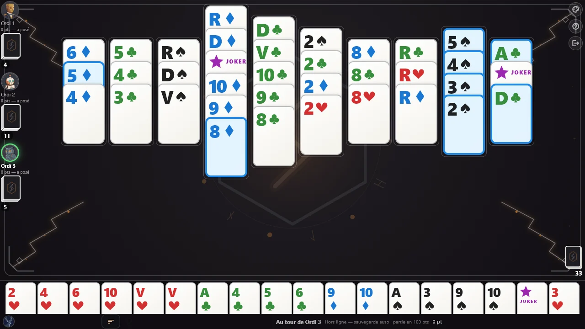
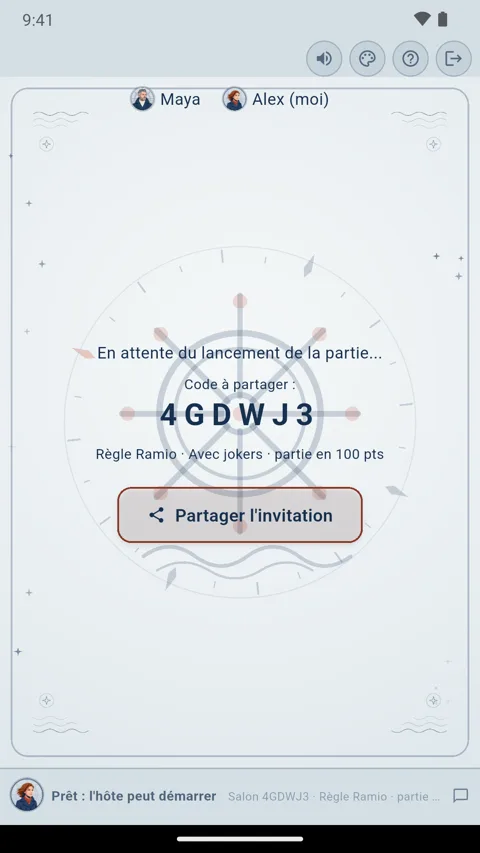
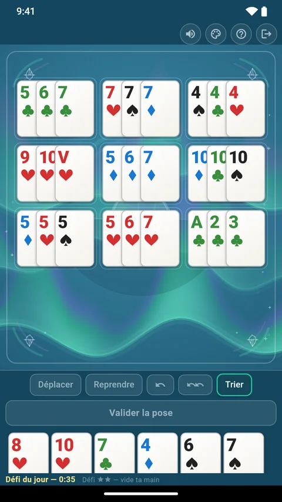

Jouer au Rummikub avec des cartes : la règle du rami voleur
Pas de boîte de Rummikub sous la main ? Deux jeux de 52 cartes et deux jokers donnent le même matériel : 106 pièces, quatre couleurs, treize valeurs, chacune en deux exemplaires. Et le jeu de cartes qui se joue ainsi existe déjà : en France, on l’appelle le rami voleur, ou rami chinois. La table y est à tout le monde et, à son tour, on peut recomposer toutes les combinaisons posées.
Cette page fait la correspondance entre tuiles et cartes, donne la règle du rami voleur pas à pas, puis ce qui change par rapport au Rummikub, avec un coup expliqué carte par carte. La règle décrite est celle de Ramio, application gratuite de rami voleur pour Android et iPhone ; elle se joue telle quelle avec de vraies cartes.
Rummikub est une marque déposée de son titulaire. Ramio n’est ni affilié au Rummikub ni approuvé par son titulaire.
- Le Rummikub, et pourquoi des cartes suffisent
- Le matériel
- La règle du rami voleur, pas à pas
- Ce qui change par rapport au Rummikub
- Un coup de réorganisation, carte par carte
- Questions fréquentes
- Jouer seul, à plusieurs ou en ligne
Le Rummikub, et pourquoi des cartes suffisent
Le Rummikub est un jeu de tuiles de la famille du rami. On y pose des suites et des combinaisons de même numéro sur une table commune, et l’on peut, à son tour, défaire et recomposer ce qui est posé pour y caser ses propres tuiles. Sa boîte contient 106 tuiles : des numéros de 1 à 13 en quatre couleurs, chacun en deux exemplaires, et deux jokers.
Un jeu de cartes a la même structure, à un détail près : chaque carte n’y existe qu’une fois. Il suffit donc d’en mélanger deux.
| Au Rummikub | Avec des cartes |
|---|---|
| Quatre couleurs de tuiles | Quatre enseignes : pique, cœur, carreau, trèfle |
| Numéros de 1 à 13 | As, 2 à 10, Valet, Dame, Roi |
| Chaque tuile en deux exemplaires | Deux jeux de 52 cartes mélangés |
| Deux jokers | Deux jokers |
| 106 tuiles | 106 cartes, ou 104 sans jokers |
| Le chevalet | La main |
| La pioche | La pioche, ou sabot |
Dans une suite, le Valet, la Dame et le Roi suivent le 10 : ils tiennent la place des 11, 12 et 13. L’As se place avant le 2, ou après le Roi (A = As, V = Valet, D = Dame, R = Roi) :
10♦︎ V♦︎ D♦︎ R♦︎ A♦︎
Une gêne, au premier coup d’œil : un jeu classique n’a que deux couleurs, rouge et noir. Un jeu dit « quatre couleurs » donne à chaque enseigne la sienne, comme les tuiles : pique noir, cœur rouge, carreau bleu, trèfle vert. C’est aussi l’affichage que Ramio propose, au choix :
R♠︎ R♥︎ R♦︎ R♣︎
Le matériel
- Deux jeux de 52 cartes, mélangés ensemble, soit 104 cartes.
- Deux jokers en tout, si vous jouez avec (106 cartes). Avec deux jeux de 54 cartes, gardez deux jokers et rangez les deux autres. Le jeu est plus tactique sans jokers, plus spectaculaire avec.
- Une feuille et un crayon pour noter les points, si vous jouez une partie en plusieurs manches.
- De la place au centre : les combinaisons y restent posées, face visible, jusqu’à la fin de la manche.
On joue de 2 à 4 joueurs. Pas de chevalet : chacun tient ses cartes en main.
La règle du rami voleur, pas à pas
1. La donne
Mélangez les deux jeux et distribuez 13 cartes à chaque joueur, que vous soyez 2, 3 ou 4. Le reste forme la pioche, face cachée au centre. On ne retourne aucune carte : il n’y a pas de défausse. Le premier joueur est tiré au sort, puis chacun commence à son tour, une manche après l’autre.
2. Le but
Être le premier à vider sa main en posant toutes ses cartes sur la table, en combinaisons valides.
3. Les combinaisons
- La suite : au moins trois cartes qui se suivent,
de la même enseigne. L’As se place avant le 2 (A-2-3) ou après le Roi
(D-R-A), mais la suite ne « tourne » jamais : R-A-2 est interdit.
7♥︎ 8♥︎ 9♥︎ - Le brelan (trois cartes) ou le carré
(quatre cartes) : même valeur, enseignes toutes différentes. Deux 9 de
pique dans le même brelan, c’est interdit, même avec deux jeux.
9♠︎ 9♥︎ 9♦︎ R♠︎ R♥︎ R♦︎ R♣︎
4. Le tour de jeu
- Piochez une carte : c’est obligatoire, à chaque tour, même si vous vous apprêtez à poser.
- Posez si vous le voulez, et si vous le pouvez : nouvelles combinaisons, cartes ajoutées à celles de la table, réorganisation.
Et c’est tout : on ne se défausse jamais. La main ne diminue qu’en posant ; chaque tour sans pose la fait grossir d’une carte.
5. La première pose : la tierce franche
Pour avoir le droit de poser, il faut ouvrir avec une tierce franche : trois cartes de sa main qui se suivent, de la même enseigne, sans joker. Il n’y a pas de minimum de points. Dans le même tour, vous pouvez prolonger cette suite, même avec un joker, poser d’autres combinaisons et déjà réorganiser la table.
Ouvre le jeu 4♣︎ 5♣︎ 6♣︎
Ne l’ouvre pas 4♣︎ Joker 6♣︎ 9♠︎ 9♥︎ 9♦︎
6. La réorganisation de la table
Une fois sa première pose faite, on peut, pendant son tour, réorganiser toute la table, poses des adversaires comprises : déplacer une carte d’une combinaison à l’autre, couper une longue suite, emprunter la quatrième carte d’un carré. Trois conditions :
- à la fin du tour, toute la table est valide ; sinon, tout revient en place ;
- au moins une carte de votre main rejoint la table ;
- aucune carte posée ne revient en main.
7. Le joker
- Il remplace n’importe quelle carte, dans une suite comme dans un brelan.
- Une combinaison peut en contenir plusieurs, tant qu’il lui reste au moins une vraie carte.
- Posé, il se déplace à volonté lors des réorganisations, mais il reste sur la table : on ne le reprend jamais en main, même en apportant la carte qu’il remplace.
- Il ne compte pas dans la tierce franche de la première pose.
8. La fin de manche
La manche s’arrête dès qu’un joueur a posé sa dernière carte. Les autres comptent les pénalités des cartes qui leur restent en main :
| Cartes | Pénalité |
|---|---|
| 2 à 10 | valeur de la carte |
| Valet, Dame, Roi | 10 |
| As | 11 |
| Joker | 50 |
Si la pioche s’épuise avant qu’un joueur ait fini, la manche s’arrête sans gagnant et chacun compte les pénalités de sa main.
9. La partie
Les pénalités s’additionnent de manche en manche. La partie s’arrête dès qu’un joueur atteint 100 points : le moins pénalisé gagne. Pour jouer vite, faites une partie simple : une seule manche, le premier qui vide sa main gagne ; si la pioche s’épuise, on rejoue la manche.
Le guide complet du rami voleur détaille les cas du joker et les variantes de table ; la vidéo Rami voleur : la règle en 2 minutes montre la règle jouée coup par coup.
Ce qui change par rapport au Rummikub
L’idée est la même : une table commune que l’on recompose. Les règles diffèrent sur plusieurs points. La colonne Rummikub reprend la règle la plus répandue ; les éditions varient sur quelques détails.
| Point | Rummikub | Rami voleur, règle de Ramio |
|---|---|---|
| Matériel | 106 tuiles, un chevalet par joueur | deux jeux de 52 cartes et 2 jokers, tenus en main |
| Donne | 14 tuiles par joueur | 13 cartes par joueur |
| Tour | on pose ; si l’on ne pose rien, on pioche | on pioche toujours, puis on pose si l’on veut |
| Première pose | au moins 30 points | une tierce franche, sans minimum de points |
| Le 1, l’As | le 1 se place seulement avant le 2 | l’As se place avant le 2 ou après le Roi |
| Joker posé | se reprend contre la tuile qu’il remplace | se déplace sur la table, ne revient jamais en main |
| Joker resté en main | 30 points | 50 points |
| Autres pénalités | la valeur de la tuile | 2 à 10 leur valeur, figures 10, As 11 |
Pas de chevalet
Les cartes se tiennent en main, en éventail. Comme on ne se défausse jamais, la main grossit à chaque tour sans pose : triez-la par enseigne, puis par valeur, pour repérer vos suites. Au centre, chaque combinaison s’étale en cartes légèrement décalées, pour que toutes les valeurs restent lisibles.
Des figures à la place des 11, 12 et 13
Valet, Dame et Roi suivent le 10 dans les suites, comme les tuiles 11, 12 et 13. Deux nuances : l’As peut aussi venir après le Roi (Dame-Roi-As), et chaque figure ne coûte que 10 points de pénalité, l’As 11.
La valeur des jokers
Un joker resté en main en fin de manche coûte 50 points, plus que toute autre carte : on a intérêt à le poser tôt. Une fois posé, il appartient à la table : tout joueur qui a fait sa première pose peut le déplacer pendant une réorganisation, mais personne ne le reprend en main.
La première pose et la pioche
Pas de calcul de points pour ouvrir : une tierce franche suffit, même faite de petites cartes. En revanche, on pioche à chaque tour, même quand on pose : chaque carte gardée en main est une pénalité qui attend.
Un coup de réorganisation, carte par carte
Le cœur du jeu : défaire ce qui est posé pour caser ses cartes. Voici un coup joué par un joueur qui a déjà fait sa première pose. La carte encadrée en gras vient de sa main.
Sur la table V♦︎ V♠︎ Joker 8♥︎ 9♥︎ 10♥︎
En main V♣︎ 3♦︎ 9♠︎
- Le joker quitte le brelan de valets et vient au bout de la suite de cœur, où il vaut le Valet de cœur. Le brelan n’a plus que deux cartes : la table n’est pas encore valide.
- Le Valet de trèfle de la main vient réparer le brelan.
Après le tour V♦︎ V♠︎ V♣︎ 8♥︎ 9♥︎ 10♥︎ Joker
Toute la table est valide et une carte de la main a été posée : le coup est accepté. Le joker n’est pas revenu en main, il a seulement changé de combinaison.
Le même coup dans Ramio, en affichage quatre couleurs.
Autre recomposition courante, qui n’existe que parce que chaque carte est en double : couper une longue suite avec le second exemplaire d’une carte.
Sur la table 3♣︎ 4♣︎ 5♣︎ 6♣︎ 7♣︎
En main 5♣︎
Après le tour 3♣︎ 4♣︎ 5♣︎ 5♣︎ 6♣︎ 7♣︎
Questions fréquentes
Peut-on jouer au Rummikub avec un jeu de cartes ?
Oui, avec deux jeux de 52 cartes et deux jokers : on obtient 106 cartes, quatre enseignes à la place des quatre couleurs et deux exemplaires de chaque valeur, comme les tuiles. Le jeu de cartes qui se joue ainsi s’appelle le rami voleur, ou rami chinois.
Combien de jeux de cartes faut-il ?
Deux jeux de 52 cartes, mélangés ensemble. Ajoutez deux jokers si vous jouez avec : 106 cartes en tout, ou 104 sans jokers.
Combien de cartes distribuer à chaque joueur ?
13 cartes chacun, à 2, 3 ou 4 joueurs. Le reste forme la pioche, face cachée.
Que valent les figures ?
Dans une suite, le Valet, la Dame et le Roi suivent le 10, comme les tuiles 11, 12 et 13. En pénalité, chaque figure vaut 10 points, l’As 11 et le joker 50.
Peut-on reprendre un joker posé ?
Pas dans la règle de Ramio : un joker posé peut être déplacé d’une combinaison à l’autre pendant une réorganisation, mais il reste sur la table. À table, certains joueurs le reprennent contre la carte qu’il remplace.
Peut-on jouer seul ?
Avec un jeu de cartes, il faut au moins deux joueurs. Pour jouer seul, Ramio propose des parties contre l’ordinateur, même hors ligne, et 1 000 casse-têtes.
Ramio, est-ce le Rummikub ?
Non. Ramio est une application de rami voleur, un jeu de cartes de la même famille, qui se joue avec deux jeux de 52 cartes. Rummikub est une marque déposée de son titulaire. Ramio n’est ni affilié au Rummikub ni approuvé par son titulaire.
Jouer au rami voleur seul, à plusieurs ou en ligne
Pas de cartes sous la main, ou personne pour jouer ? Ramio applique la règle de cette page sur téléphone : une pose qui ne tient pas est refusée, et rien ne bouge sur la table. Gratuit, sur Android et iPhone.
- Seul : contre l’ordinateur, à quatre niveaux, même sans connexion ; 1 000 casse-têtes et un défi du jour commun à tous les joueurs.
- À plusieurs : un salon privé, un code à six caractères à envoyer, et la partie commence, de 2 à 4 joueurs, avec ou sans jokers, aux points ou en partie simple.
- En ligne : des parties publiques de 2 à 4 joueurs, quand vos amis ne sont pas là.



Un casse-tête dans le navigateur
Sans rien installer ni créer de compte : videz votre main en recomposant la table. Une minute suffit pour sentir ce que « voler » une carte veut dire.
Essayer un casse-tête dans le navigateur
Contact : contact@quintaingames.com
Rummikub est une marque déposée de son titulaire. Ramio n’est ni affilié au Rummikub ni approuvé par son titulaire.